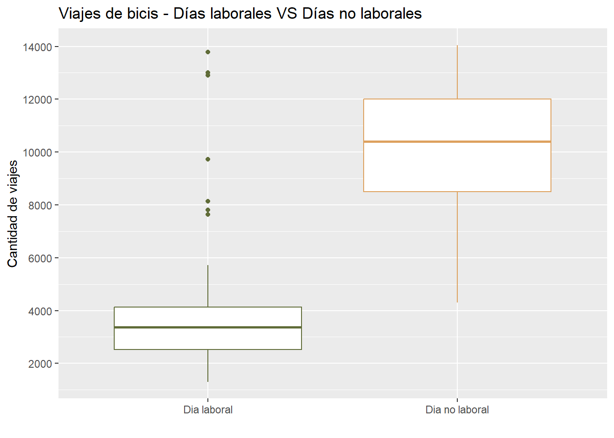
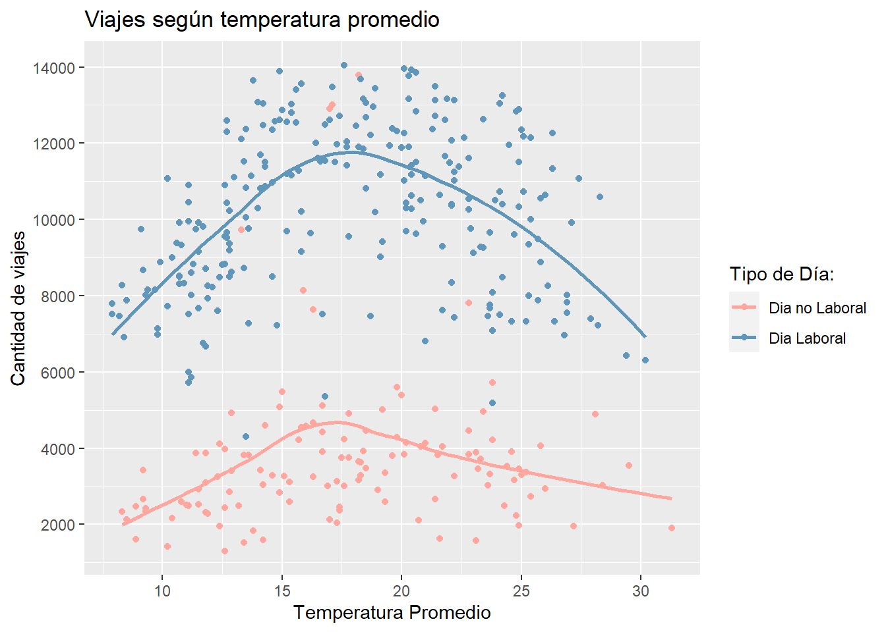
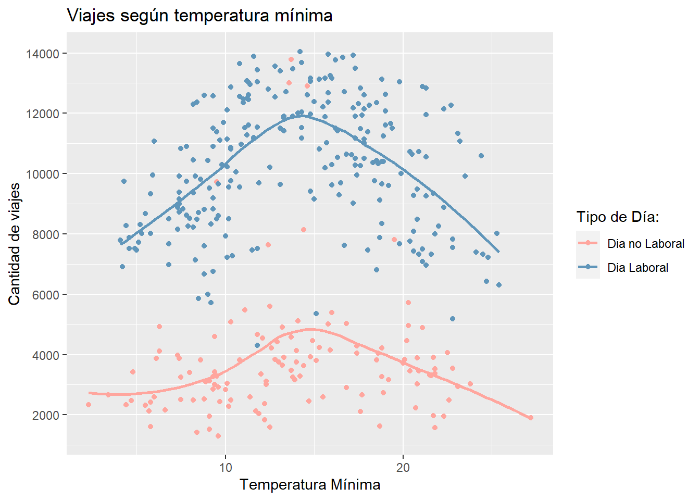
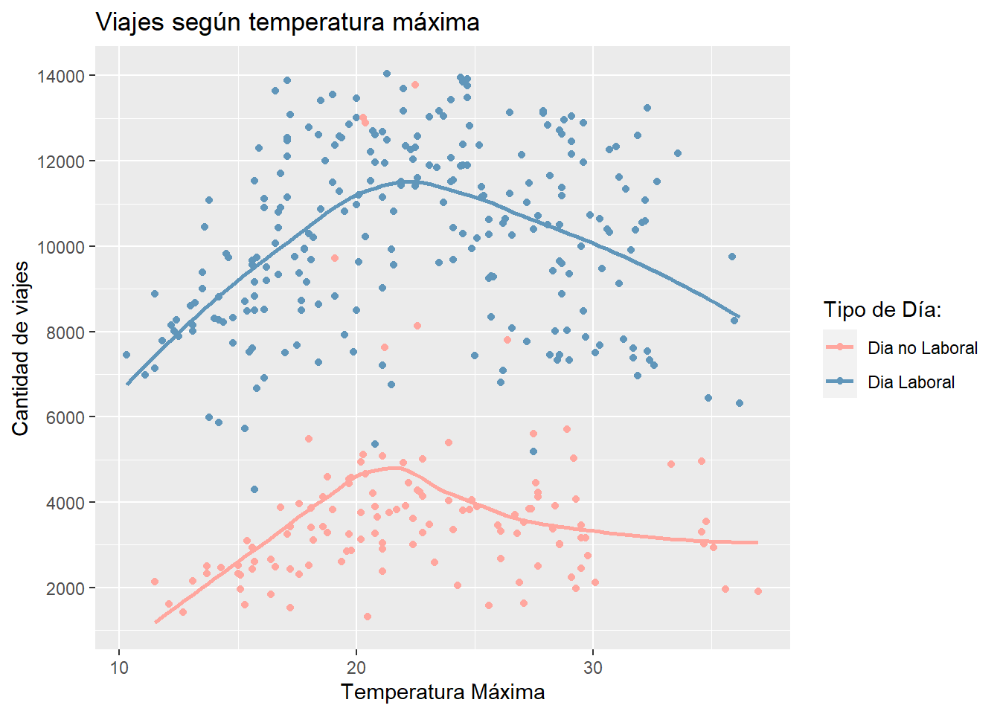
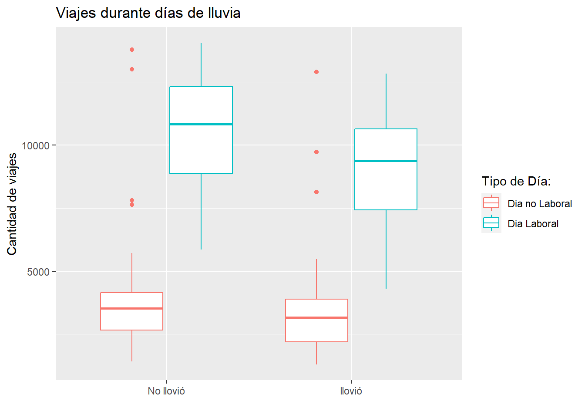
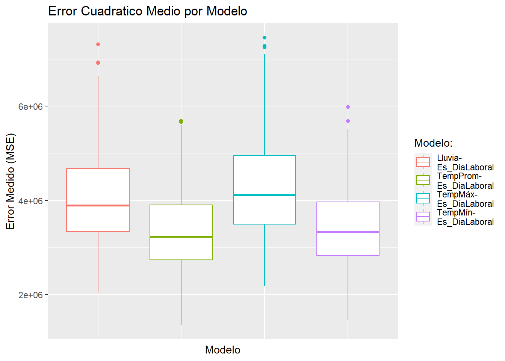
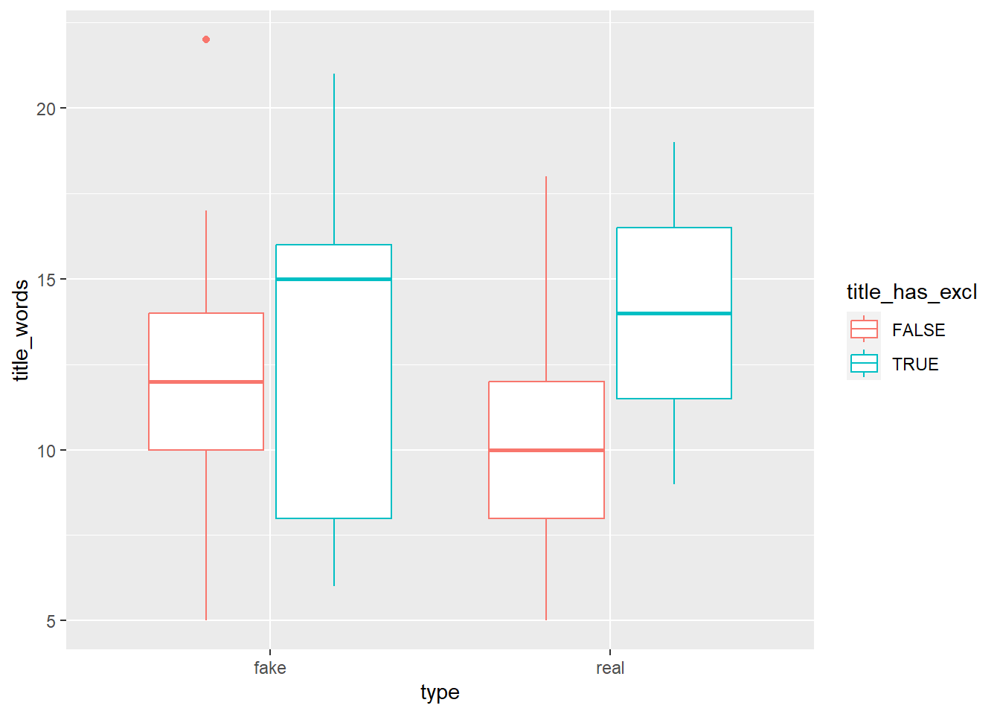
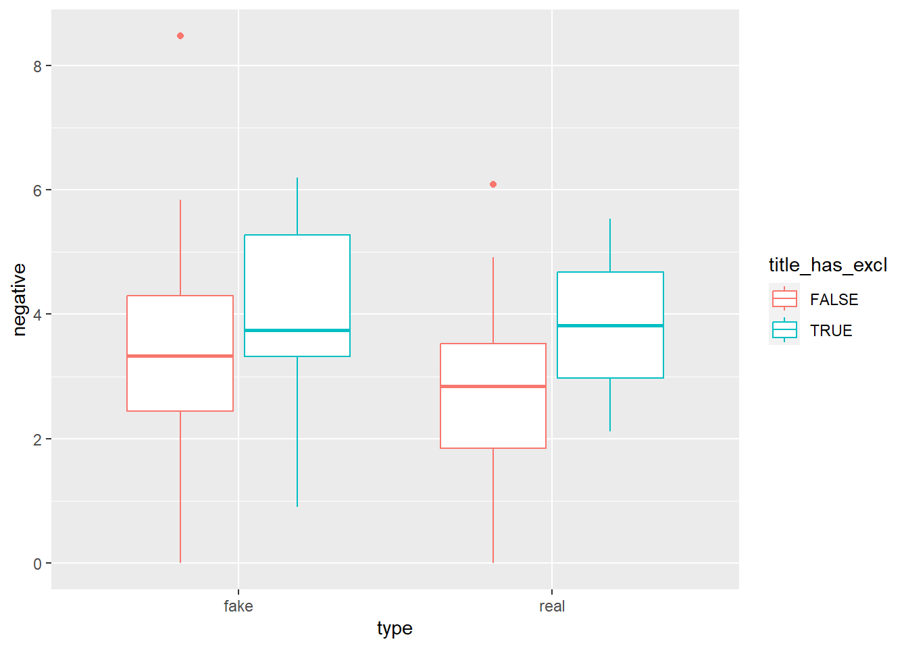
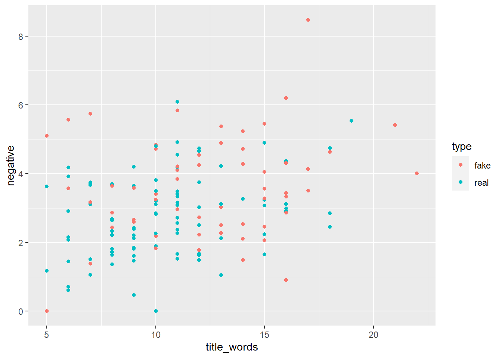

Buscamos hallar 2 varaibles que mejor describan/predigan el uso de bicis, según variables relacionadas al clima y fechas laborales.
Solución
Comenzaremos observando y haciendo un analisis exploratorio del dataframe. Este analísis tiene como objetivo encontrar las variables que mejor describan el uso de bicicletas en CABA.
Analizando cada variables independiente, observamos que una variable fue la que mejor se destaco en este analísis, la cual es “dia_laboral” que indica el uso de bicis en dias feriados/fines de semana y dias laborales.
gr_bike_uses_by_workdays

Con esta variable en consideración, analizamos como se comporta esta variable con las otras variables disponibles
Hallamos 4 variables que podrían ser candidatos para ser la segunda variable. Estas variables son tmin, tmax, tavg y llovio
gr_bike_uses_tavg_workday
`geom_smooth()` using method = 'loess' and formula = 'y ~ x'

gr_bike_uses_tmin_workday
`geom_smooth()` using method = 'loess' and formula = 'y ~ x'

gr_bike_uses_tmax_workday
`geom_smooth()` using method = 'loess' and formula = 'y ~ x'

gr_bike_uses_rain_workday

Para decidir cual de las previas combinaciones de variables utilizar, llevamos a cabo una regresión lineal para cada combinación y calculamos el error cuadrático medio para 500 dataframes de testeo.
gr_mean_squared_error_by_model

Notamos que tavg y tmin tienen errores cuadraticos medios, pero por una leve diferencia tavg y dia laboral presentan un mejor modelo.
`geom_smooth()` using method = 'loess' and formula = 'y ~ x'
Conclusión
CLASIFICACIÓN
Problema
El objetivo de este ejercicio es desarrollar un clasificador de noticias en “reales” o “fake-news”. A partir de 3 predictores definidos: title_has_excl, negative y title_words
Solución
Comenzamos visualizando las variables predictoras para ver si pueden sesr útiles para clasificar las noticias en “reales” vs. “fake-news”.
gr_title_exclamations

gr_negative_exclamations

gr_negative_title

#ver si no hay un grafico que mejor explique esto (quizas graficos que visualizen individualmente cada variable)table(fake_news$title_has_excl, fake_news$type)
fake real
FALSE 44 88
TRUE 16 2
Notamos que las variables mencionadas tienen cierta habilidad para predecir si una noticia es real o fake. A partir de este analisis, ahora nos profundisaremos en crear dos modelos que puedan predecir que probabilidad tiene una noticia de ser fake o real.
Modelo de Arboles de Decisión
Para nuestro modelo de arboles de decision, debemos hallar el minsplit que mejor predice la variable type
Vemos que para 15 testeos un k con valor 25, fue el que mejor predijo en promedio.
#probar con mas tests y ver otras variables (investigar rpart.control())
Testeo
Supongamos que se publica un nuevo artículo que tiene un título de 15 palabras sin signos de exclamación y el 6% de sus palabras tienen connotaciones negativas. Calcular la probabilidad de que el artículo sea “fake-news”.
Probemos con nuestos modelos la probabilidad de que sea real vs fake.